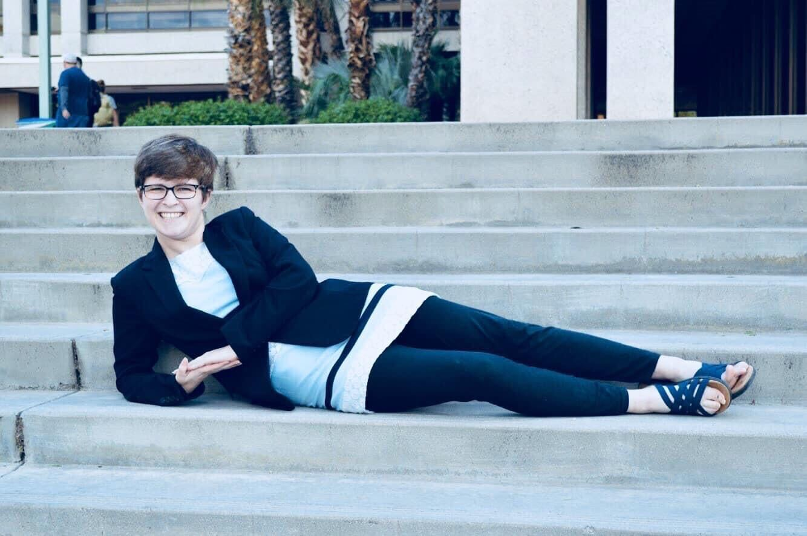

"The skyline is a promise, not a bound."
— JOHN MASEFIELD
I am a Ph.D. researcher at the University of Arizona, where I work with Dr. Ewan Douglas in the University of Arizona Space Astrophysics Laboratory. My primary research interests are the development of instrumentation for high contrast imaging from space, with a scientific focus on dust and debris disks in the optical and infrared.
My dissertation work focuses on the development of a high-contrast vacuum testbed for the Coronagraphic Debris and Exoplanet Exploring Payload (CDEEP), a proposed small-satellite mission to study debris disks of nearby stars in scattered light. I also work on Nancy Grace Roman Space Telescopes simulations.
Explore to learn more about me and my research.